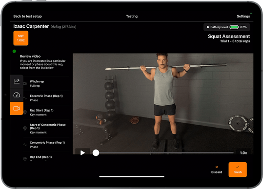
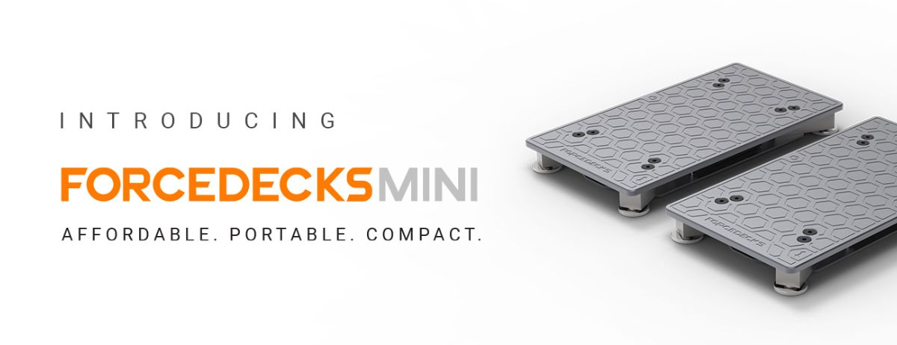
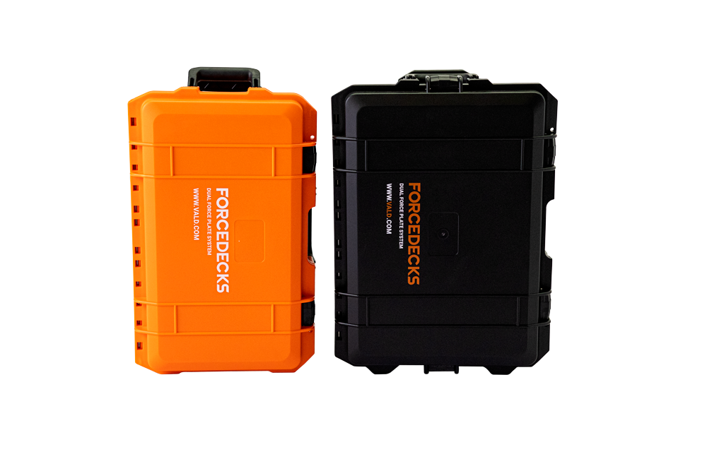

Smart Cricket (previously Speculur) was first ideated in
2015 and their goal was to capture data of
cricket shots. That idea was developed in the form of a cricket bat sensor (Batsense) and a mobile
app which they showcased at the 2017 ICC Champions Trophy
in England and Wales. They then officially
launched in 2019 and was used during the
ICC Cricket World Cup . So how did does it all work and what
does it do for a Batsman?
The Batsense sensor is an Inertial Measurement Unit (IMU) that captures acceleration, angular rate
and orientation (magnetometer). It can be attached to the end of a cricket bat using a sleeve that
acts as an interface. A batsman can install Batsense onto any cricket bat and turn that into a
‘Smart Bat’. Once the sensor is in place and connected to the Batsense smartphone app, the batsman
can start hitting and collecting data. The sensor tracks metrics such as Impact time, angles (back
lift angle, follow through angle, bat start angle, impact angle, blade angle), speeds (max bat
speed, average bat speed, speed at impact), rotation at impact and shot efficiency. These metrics
coupled with video footage of the shot and a 3D visualisation (avatar) of the motion helps identify
where the batsman is strong at and where they can improve. The app also comes with various features
to facilitate coaching and monitoring of player performance throughout trainings and matches.
Stump Broadcast (Source: Smart Cricket)
Since launching in 2019, they have sold over 10,000 units worldwide, and they have even developed
Smart Stumps that can
collect data from the Batsense and broadcast that data real-time during a
match. Going forward, the team at Smart Cricket are committed to expand their range of sensor
technology to bring more insights into the game and help level up the performance of budding
cricketers while reducing the risk of injuries. Some of those wearable technologies in their roadmap
include putting sensors in cricket gloves, cricket helmets, shin pads, cricket ball and even shoes.
Vald Performance

ForceDecks Vision – in the latest version of the iPad App.
Ever since ForceDecks became part of Vald Performance in 2018, they have been making lots
of little
improvements to make performance measures easier and better. Just over a year ago, they released the
ForceDecks
Mini to offer an ultra-portable solution so it’s easier to bring it around. This year,
they have integrated video capture into their ForceDeck iPad app so that users (physios, exercise
scientists, etc) can easily record the athlete’s movement, posture and joint angles, and review it
in relation to the ground reaction forces (GRF) data from the ForceDecks dual force plates.
Left: ForceDecks Vision in action; Right: Wireless Adapter to allow 1st gen
ForceDecks to work with the iPad app.
It may seem like a simple add-on, but the benefits are really significant. Firstly, syncing video
and force plate data is not always straightforward. ForceDecks has not only done that, but they have
incorporated computer vision algorithms to identify and annotate key moments and phases of the
assessments/measures. So when it comes to reviewing the assessment and giving feedback to the
athlete, the exercise scientist can quickly jump to the specific annotated key moments instead of
trying to manually scroll through the video to find them. Secondly, having visual reference of the
athlete’s movement, side-by-side with the data helps provide better context to the athlete and helps
keep them engaged. One additional thing Vald Performance has done is developed a wireless adapter
for the older ForceDecks models so that users of those models can also utilise this new iPad
feature. Read more about ForceDecks Vision here: link
.
Vald Health Launches ForceDecks Mini For Portable Assessments

Vald Health is a division of
Vald which has developed and acquired various movement measurement and
monitoring tech products including the Nordbord (hamstring testing), ForceFrame (strength testing),
HumanTrak (movement analysis), TeleHab (exercise prescription) and ForceDecks (dual force plate
system). All these products can be applied in a sports performance setting, which is what Vald
Performance focuses on; and to some extent, they can also be applied in a clinical setting,
which is
the realm of a Vald Health. That is quite often the case with sports tech products -> they typically
can swing over to work in allied health applications, and health tech products can sometimes cross
over to sports applications.

In 2018, Vald acquired NMP Technologies, the makers of ForceDecks, a dual force plate system for
evaluating neuromuscular performance. One of the key features (or differentiation) of this dual
force plate system (compared to other force plate systems in the market) is the ability to measure
forces of each limb/foot of an athlete individually and therefore the ability to quantify left-right
asymmetries during jump, isometrics, squat measures etc. The system also comes with software that
quickly processes, analyses and presents the key metrics for every test/measure. There were
previously already 2 versions of the hardware – the ForceDecks Max and the ForceDecks Lite which is
smaller in terms of weight and area of measure. More recently, Vald Health has launched the
ForceDecks Mini to offer an even more portable solution to allied health or rehabilitation
specialists. Weighing only 5kg per plate and packed in a small carry case, this makes the Mini
system easier for physiotherapists to bring assessments to their clients – whether its offsite
testings or even home visits for older clients. At the same time, the Mini maintains the same
sampling rate (1000Hz) as the larger systems and supported by the same software so practitioners can
lean on its accuracy and reliability. Find out more on their website here: link.
Cookies Consent
This website use cookies to ensure you get the best experience on our website.